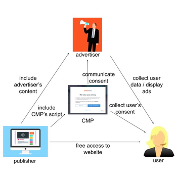
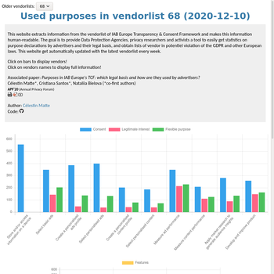
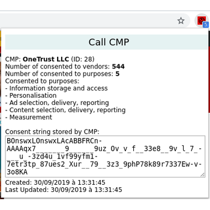

Célestin Matte
Administrateur Système DevOps


Je suis administrateur système devops en freelance. Je déploie et migre des infrastructures de manière automatisée, documentée et traçable en utilisant git, Ansible et Docker. J'assure la résilience de vos systèmes en utilisant des techniques de monitoring, redondance et redéploiement automatique rapide.
Je maintiens avec passion des infrastructures Linux depuis 8 ans dans des contextes personnels, professionnels ou pour des associations. Cela m'apporte une longue experience en administration système et management des incidents. J'ai un diplôme d'ingénieur et un doctorat, ce qui me donne à la fois autonomie et efficacité. Je travaille régulièrement en environnement international.
- migration de services vers des systèmes clouds,
- mise en place de systèmes de sauvegardes automatisées,
- mise en place d'un système d'alerting pour vos serveurs,
- mise en place d'un pipeline CI/CD,
- installation de nouveaux services (web, mail, visioconference...),
- mise à jour de vos certificats.
Strasbourg, France
Projets de recherche en vie privée
Étude sur les bannières à cookies

Les bannières à cookies du TCF d'IAB Europe sont-elles conformes à la loi ?
Vendorlist Explorer

Une application web affichant des statistiques et informations sur les déclarations d'utilisation des finalités de traitement de l'information par les publicitaires dans le TCF d'IAB Europe
Cookie Glasses

Une extension de navigateur pour mettre au jour les comportements cachés des bannières à cookies
Wombat

Un système de traçage Wi-Fi de démonstration
Présentation de thèse

Les slides de ma soutenance de thèse sur le traçage Wi-Fi. L'introduction est écrite de manière à être compréhensible par un large public.
Services en ligne
Sistearth Express

Un vieux jeu vidéo en ligne que je maintiens
N scores

Une application web affichant des informations sur les records dans le jeu de Metanet « N »
Ploudseeking game

Un challenge de sécurité de style CTF (capture the flag)
Autres projets
Spectacles

Spectacles danse & arts numériques
PixXxeL

Un jeu que j'ai développé en assembleur x86 pendant mes études